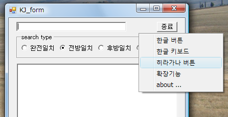

(1)검색하는 말을 입력합니다.
문자를 입력할 때마다, 자동으로 검색을 실시합니다.(incremental search)
(2)프로그램을 종료시킵니다
(3)검색 종별
완전일치, 전방일치, 후방일치, 부분일치를 선택. 디폴트는 전방일치.
(4)결과의 표시 에리어입니다
히라가나, 한자, 한글 뿐만이 아니라 알파벳에서도 검색할 수 있습니다。
키 입력과 동시에 인크리멘탈에 검색해 갈 것입니다
(1)검색하는 말을 입력합니다.
문자를 입력할 때마다, 자동으로 검색을 실시합니다.(incremental search)
(2)프로그램을 종료시킵니다
(3)검색 종별
완전일치, 전방일치, 후방일치, 부분일치를 선택.
디폴트는 전방일치.
(4)결과의 표시 에리어입니다
히라가나, 한자, 한글 뿐만이 아니라
알파벳에서도 검색할 수 있습니다。
키 입력과 동시에 인크리멘탈에 검색해 갈 것입니다
프로그램상에서「 오른쪽 클릭」하면 확장용의 메뉴가 나옵니다

확장기능의 사용법